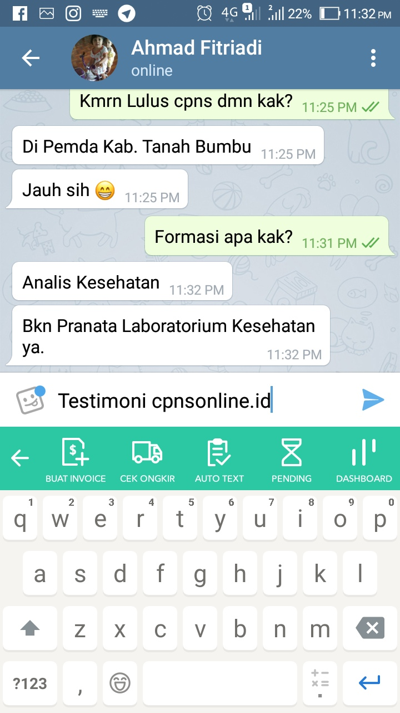

TESTIMONI YANG TELAH LULUS PNS TAHUN 2018 & 2019/2020


Bimbingan Belajar CPNSonline.ID Berfokus ke Cara Cepat menjawab soal-soal CPNS/PPPK, dan setiap hari rutin pembahasan soal-soal sesuai kisi-kisi PERMENPAN dan berbasis HOTS
Ini kata Muhammad Endi yang telah mengikuti Bimbel kami dan di Bimbing langsung Oleh Mentor CPNSOnline.id, Alhamdulillah berhasil lulus di Formasi Guru IPA Ahli Pertama SMP Negeri 1 Bunguran Utara Natuna Kabupaten Natuna Provinsi Riau
Ini kata Syafmayeni yang telah mengikuti Bimbel kami dan di Bimbing langsung Oleh Mentor CPNSOnline.id, Alhamdulillah berhasil Lulus di Instansi Pemerintah Kab Solok Formasi Perawat Terampil
Alumni Poltekkes Kemenkes Palembang Asal Palembang, Sumatera Selatan Instansi Pemprov Sumatera Selatan Formasi Perawat Gigi Terampil RS. Khusus Gigi dan Mulut Provinsi Sumatera Selatan
Alumni Universitas Indonesia Asal Bekasi Lulus di instansi BKPM Formasi Pemeriksa Penanaman Modal
Butuh waktu yang lebih lama untuk memahami dan menguasai bidangnya
Kamu lebih mungkin melakukan kesalahan berulang tanpa tahu penyebabnya
Hal-hal dasar yang penting terkadang tidak dipelajari dan terlewatkan
Kemungkinan merasa frustrasi dan stres akibat kegagalan yang terus-menerus
Jika rasa frustrasi & stres tak diatasi, maka sangat mungkin proses belajarmu menjadi gagal & tidak maksimal
Punya tempat bertanya, dan mendapat masukan berharga dari yang lebih Ahli
Fleksibilitas waktu belajar 24 jam dimana saja dan kapan saja
Membiasakan diri dengan soal-soal berbasis komputer
Materi pelajaran lengkap dapat didownload dan ditonton berulang-ulang
Memiliki lingkungan kompetitif berwawasan Nasional
Bank soal dan prediksi soal yang lengkap dan sesuai PERMENPAN
Dapat mengukur dan mengetahui sejauh mana kemajuan Anda
Untuk mengurangi biaya operasional, kebanyakan bimbel cpns mengadakan kelas streamingnya pada saat 1 bulan sebelum tes cpns dimulai
Sedangkan di CPNSonline.ID untuk memberikan yang terbaik kepada peserta bimbingan, kelas streaming sudah kami adakan sejak januari dan rutin 6x seminggu hingga tes cpns berakhir
Senin Rabu Jumat
Selasa Kamis Sabtu
Hasil pembahasan kelas streaming sejak Januari sudah kami sediakan rekapan videonya jadi yang baru bergabung tidak ketinggalan materi...

Silahkan Gabung sekarang sebelum Pendaftaran CPNS & PPPK ditutup
Unlimited Tryout CPNS & PPPK (comingsoon)
20 Paket Tryout SKD
2 Paket Pemantapan
Materi Penunjang
Group & Chanel
Video Tips & Trik
Kelas Privat & Streaming
Unlimited Tryout CPNS & PPPK (comingsoon)
40 Paket Tryout SKD
2 Paket Pemantapan
Materi Penunjang
Group & Chanel
Video Tips & Trik
Kelas Privat & Streaming
Mohon jangan di klik jika belum serius untuk mengikuti Tes CPNS / PPPK 2021